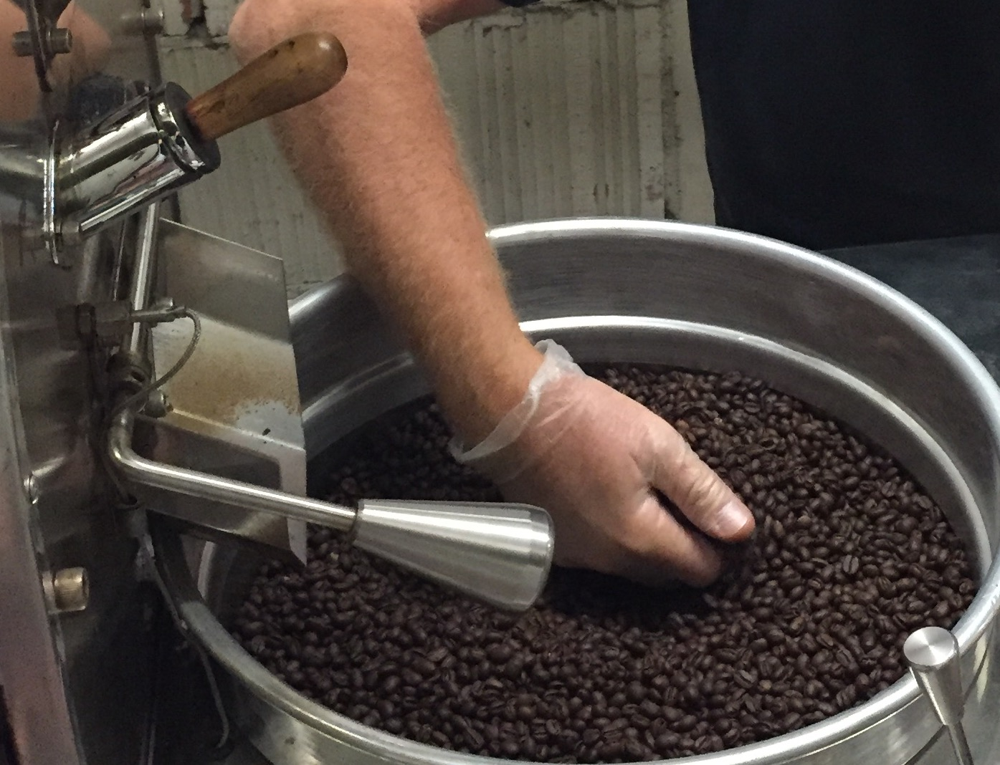
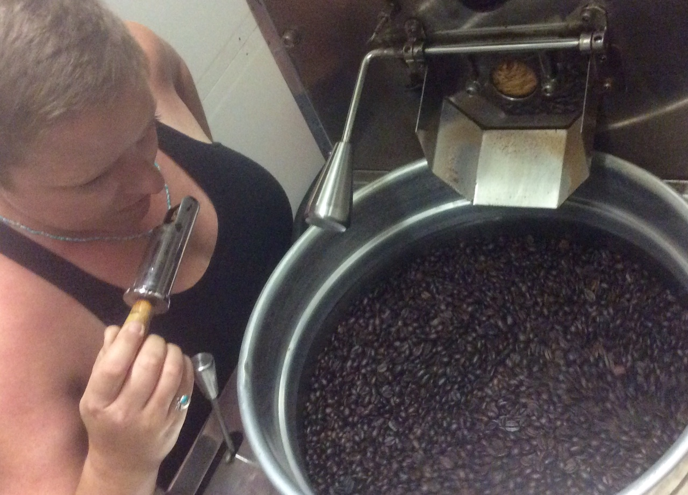
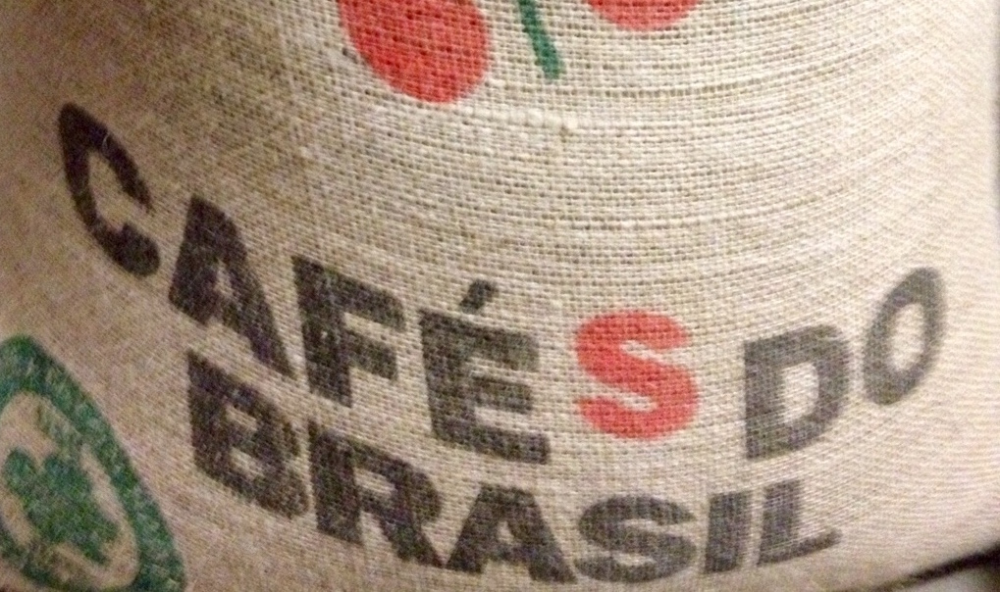

In 2016 Caffe Frascati merged with long-time Bay Area coffee roaster Pacifico Primo Coffee Trading Company and formed Caffe Frascati Roasting. Our lead roaster, Barney Stefanson, was born and raised in San Jose and moved to Italy and started roasting coffee there in the 1980’s. He went on to roast coffee on four different continents and a half dozen different countries, learning different methods and nuances along the way. Over more than 30 years of roasting, Barney perfected the process to develop the fullest flavor profile, aroma and overall character in the cup.
By coincidence, Caffe Frascati owner Roger Springall was also living in Italy in the 1980’s. When he opened his café in San Jose, Roger knew he wanted his coffee to taste just like those he had enjoyed in the coffee bars in Rome and Barney knew how to deliver it. Together they developed the Caffe Frascati signature espresso blend that is used today in the café. Come and try our espresso or cappuccino and find out why it is called “the best coffee in San Jose” by customers, online reviewers and bloggers.
Caffe Frascati Roasting buys only 100% Arabica beans from the growers and brokers Barney knows and trusts. They are the best, mid-crop beans grown between the Tropic Of Cancer and the Tropic Of Capricorn, in South and Central America, Africa, and the Pacific Rim.
We roast coffee for several Bay Area cafes and local businesses, and our Caffe Frascati espresso is one of several signature blends freshly roasted on the premises and available for purchase at Caffe Frascati in downtown San Jose.